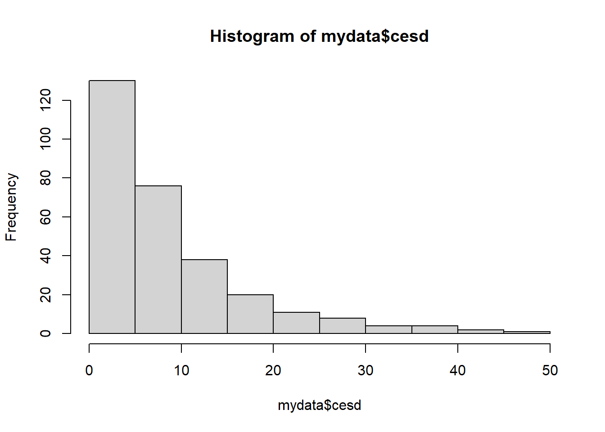

# Load libraries
library(dplyr)
# Read in the data
raw <- read.delim("https://norcalbiostat.netlify.app/data/Depress.txt",
sep="\t", header=TRUE) %>%
# convert all variable names to lowercase
janitor::clean_names()
# Select only the variables that I am interested in
mydata <- raw %>% select(age, marital, cesd, health)HW 03: Data Management
Wrangling your data into analyzable form
Purpose
By now you should know what variables you want to use, and you’ve looked over the codebook enough now that you have an idea of some potential problems that you will encounter. This assignment uses your chosen research data, and the variables that you chose in the last assignment when you created a personal research codebook. You will thoughtfully review the variables you are interested in, document which ones will need changed and how.
All raw data needs to stay raw, and all changes need to be documented. You will create a script/code file that will make all changes to the data in a programatically and reproducible way. You will create a single code file that imports your raw data, performs some data cleaning steps, and saves out an analysis ready data set that you will use throughout the semester.
You are not expected to have completed data management for every one of your variables under consideration by the submission date. I want to see a VERY good effort has been made (raw data read in, at least 2 quant and 2 cat variables dealt with, analysis data saved out.)
Check the rubric in Canvas for more grade specific details.
Instructions
- Download this template starter script and save it into your math615/script folder.
- After you load the data, restrict the variables to only the ones you are investigating using the
selectfunction from thedplyr(ortidyverse) package. - Explore and clean at least 2 categorical and 2 numeric variables. One by one, check each variable for necessary adjustments. Complete each of the following steps for each variable.
- First explain in English what the variable name is and what it measures.
- Then examine the variable using the
table(),summary()andhist()functions. - Identify the data type of the variable using the
class()ortypeof()functions. Ask (and answer) the question “Does this match with the intended data type?” - Recode the data as necessary
- Always confirm your recodes worked as intended by creating another table or summary.
- Export the resulting data set to your
datafolder asdatasetname_clean.Rdata, e.g.addhealth_clean.Rdatausing thesave()function
Reference lec03b-data_prep and ASCN Chapter 1 on how you can explore your data and start to make data edits using R. Not sure how to start? Check out the walk through video in Canvas.
Submission instructions
- You will submit your code file to Canvas. This must run on my computer.
- What comes out is what I grade.
- Render your script file to PDF before you submit to ensure that it works and looks the way you expect it to.
Exceptions: If you are working on a personal data set then you must submit a PDF to Canvas demonstrating reproducibility. If there are questions I may ask you to demonstrate your code to me in person.
Example
Tip
Here is an example using R Markdown/Quarto. Everything you see below this line comes is written in the .qmd script itself. This is an example of literate programming where you write what you are going to do, do it in code, and then write what you have learned after each step.
Setup
General Health
The variable health records a persons perceived general health as being either Excellent, Good, Fair or Poor. This is considered an ordinal categorical variable.
table(mydata$health)
1 2 3 4
130 115 35 14 class(mydata$health)[1] "integer"The variable health currently is an integer with numeric values 1-4, but the codebook states that this is a categorical variable where 1=Excellent, 2=Good, 3=Fair, 4=Poor. So I need to convert this numeric variable to a factor variable. There are no values outside the 1-4 range, such as a -9 that codes for missing data so I do not need to make any further adjustments (You want to code out missing before you convert variables to factors)
mydata$health_cat <- factor(mydata$health, labels=c("Excellent", "Good", "Fair", "Poor"))I will confirm that the recode worked by making a two-way table
table(mydata$health, mydata$health_cat, useNA="always")
Excellent Good Fair Poor <NA>
1 130 0 0 0 0
2 0 115 0 0 0
3 0 0 35 0 0
4 0 0 0 14 0
<NA> 0 0 0 0 0This shows that all 1’s are now ‘excellent’, 4’s are now ‘poor’ and so forth.
CESD
The numeric variable CESD represents the depression index scale, which is a sum of 20 component variables. A high score indicates a person who is depressed, with 16 being the typical cutoff for creating a binary indicator of depression.
summary(mydata$cesd) Min. 1st Qu. Median Mean 3rd Qu. Max.
0.000 3.000 7.000 8.884 12.000 47.000 hist(mydata$cesd)
There are no values outside of the expected range, and no missing values.
Indicator of Depression
Create the binary indicator of depression using CESD
mydata$depressed <- ifelse(mydata$cesd > 16, "depressed", "not depressed")
table(mydata$depressed, useNA="always")
depressed not depressed <NA>
45 249 0 No missing values were accidentally generated,
Export cleaned data set
Keep only selected variables and save to an external file
clean <- mydata %>% select(age, marital, cesd, depressed, health_cat)
save(clean, file=here::here("data/depression_clean.Rdata"))